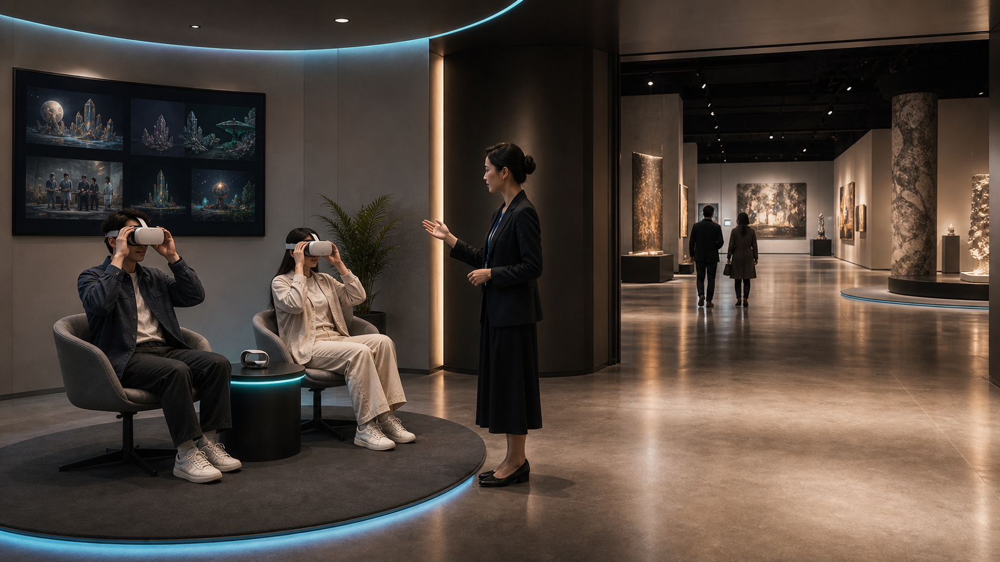
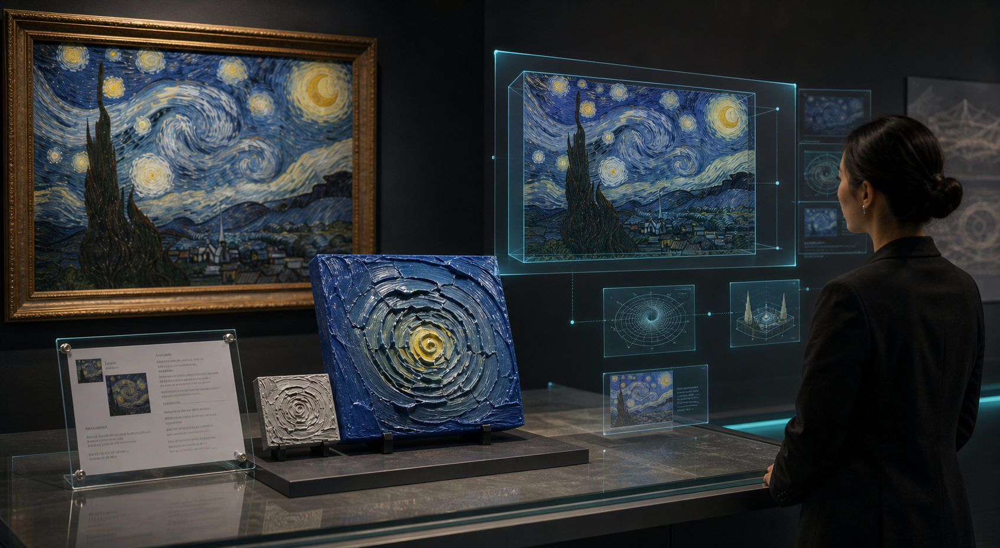
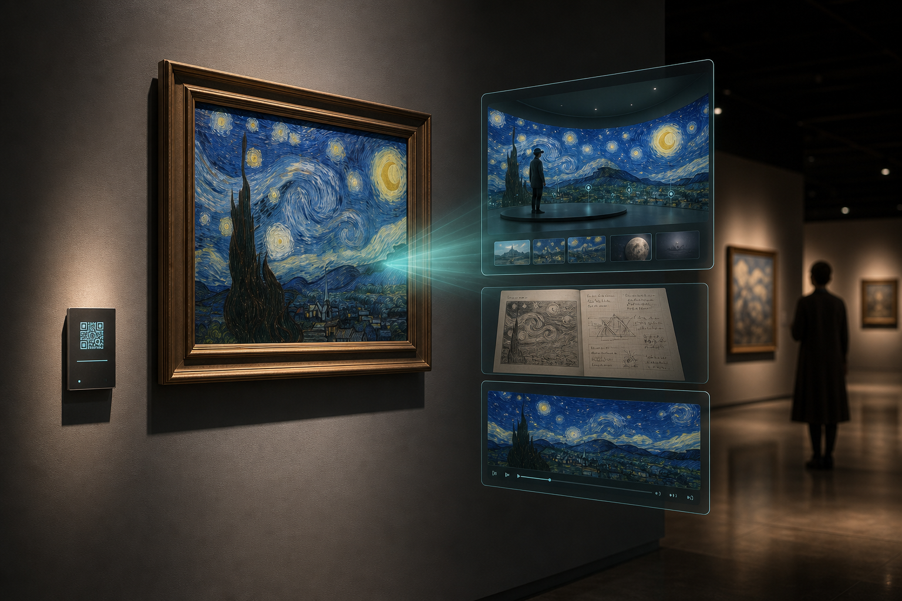
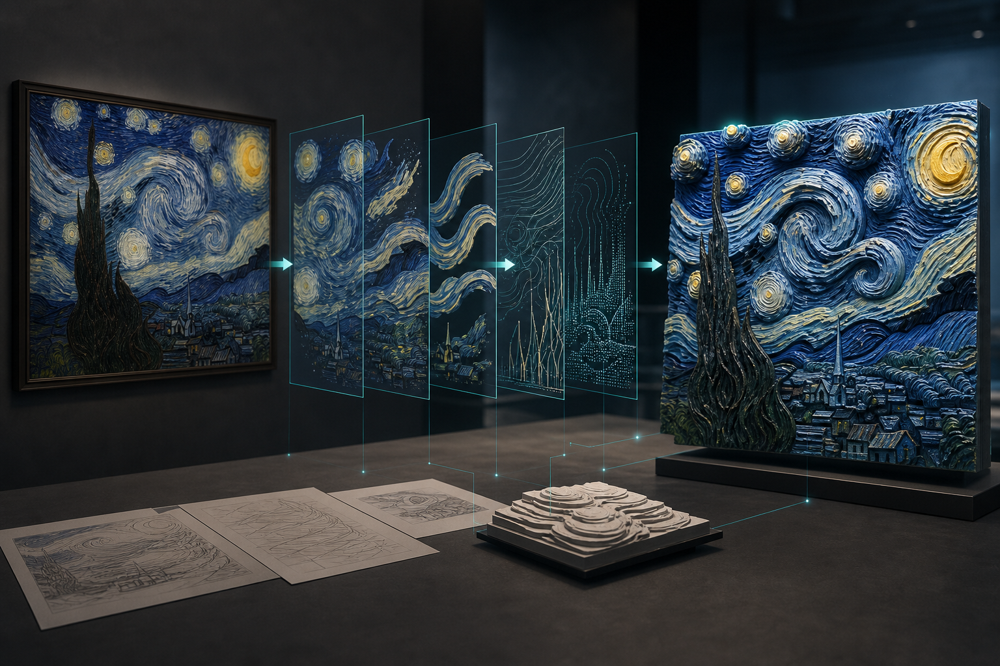
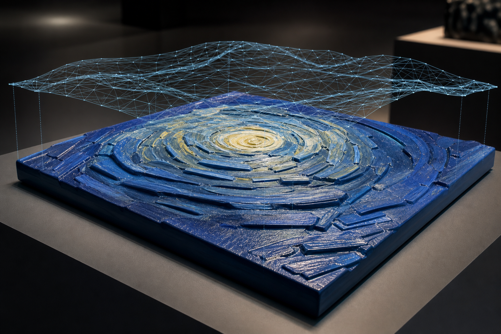
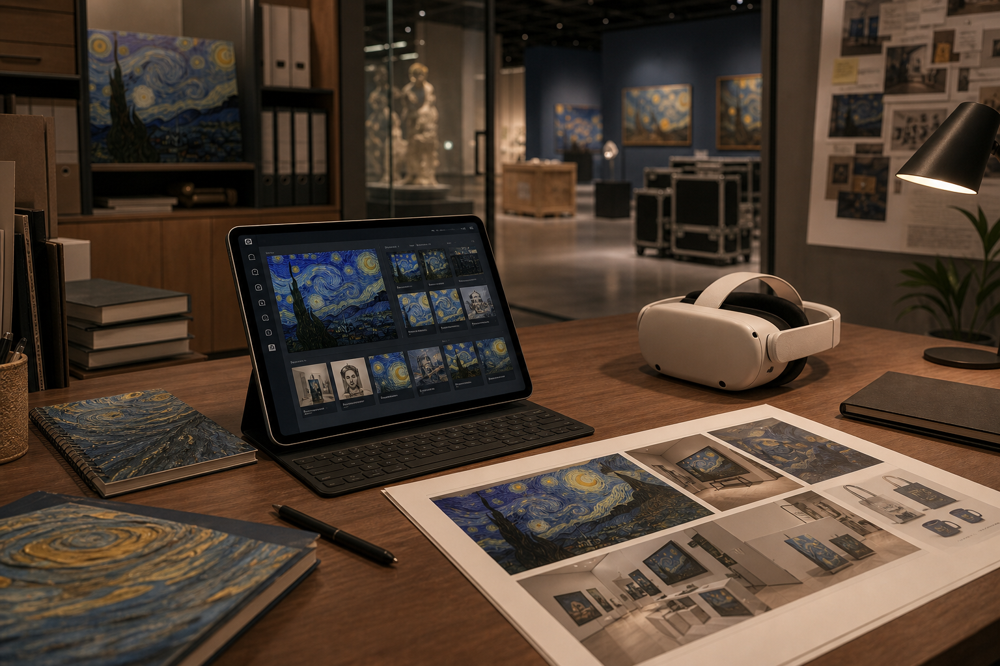
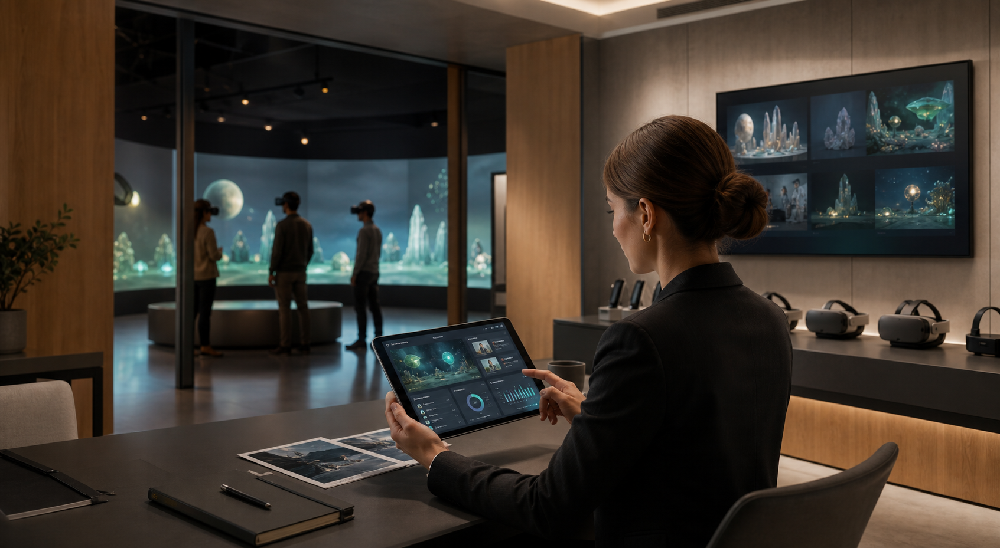

入口预览区
用 1-2 台 Quest 设备和一块说明屏，在观众入场前完成展览导览。工作人员不需要反复口头解释，观众也能快速知道这次展览怎么看。
For Museums · Malls · Exhibition Centers
元维构把线下展览、作品档案、三维模型、视频内容和空间叙事整理成可佩戴观看、可现场导览、可持续传播的 VR 美术馆。它适合放在美术馆入口、商业体公共展区、展览中心前厅、教育展区或临展等候空间，让观众在进入展厅前先理解整个展览。

On-site Use
在入口、前厅或展览动线旁设置一处小型 VR 体验点，观众可以先看到展览结构、重点作品和隐藏内容，再进入真实展厅观看原作。
用 1-2 台 Quest 设备和一块说明屏，在观众入场前完成展览导览。工作人员不需要反复口头解释，观众也能快速知道这次展览怎么看。
把线下墙面无法承载的视频、创作过程、三维拆解、空间模型和声音叙事放入 VR 中，让作品拥有第二层信息。
展览结束后，VR 美术馆和网页 3D 展厅可以继续作为项目档案、招商材料、教育课件和线上传播入口。
Service Function

Exhibition Content Asset
以《星夜》局部转译样本为例，线下可以展示原作信息、转译说明、实体浮雕和制作过程；VR 美术馆则继续承接三维模型、结构拆解、视频记录和作品档案。这样一件展品不再只是墙面上的图像，而是成为可以被讲解、被体验、被归档、被传播的内容单元。

从原作或局部细节进入内容系统，连接作品信息、策展说明、作者背景和观看路径。

把“为什么这样转译”讲清楚：空间结构、色彩关系、尺寸、材料和制作流程都可以被展陈化。

VR 中可同步展示三维模型、细节放大和结构层次，让观众理解作品从图像到空间的变化。

展签、样本、数字档案和网页入口可以继续用于教育课件、巡展资料、招商沟通和媒体传播。
Why It Matters
复杂展览、儿童作品、当代艺术、企业项目或跨媒介作品，都可以先在 VR 中建立观看地图，让观众进入展厅后更容易看懂。
视频、过程档案、3D 模型、空间化视觉、声音叙事和隐藏信息不必挤在墙面上，可以进入数字层继续展开。
一次展览结束后，作品信息、三维资产、导览结构和网页入口仍可用于巡展、教育、招商、媒体传播和年度资料。
Deliverables

梳理展览结构、重点作品、观众动线、可公开内容、版权边界和现场使用方式。
制作 Quest 可运行的虚拟空间、作品入口、互动菜单、导览节点、全景场景和返回逻辑。
同步提供轻量网页展示、作品档案页、二维码入口、案例页面或展后传播页面。
提供入口体验点、设备数量、工作人员说明、观众排队动线和现场提示文案建议。
公开展示、宣传使用、模型源文件、视频素材、儿童作品授权和商业使用范围分开确认。
支持更换作品、补充档案、扩展展厅、优化模型体积、更新网页入口和活动版本。
Workflow
用于入口导览、教育讲解、临展传播、招商展示，还是展后档案。
收集作品图、展签、视频、模型、音频、策展文本和可公开权限。
先完成 1-3 件代表作品的结构、故事和进入画面，验证观众是否能理解。
再批量接入作品、网页入口、二维码档案和现场使用说明。
Start A Project
适合提交的信息包括：展览主题、场地照片、作品数量、是否有视频或 3D 素材、预计观众类型、现场可放置设备的位置、是否需要网页端同步展示。